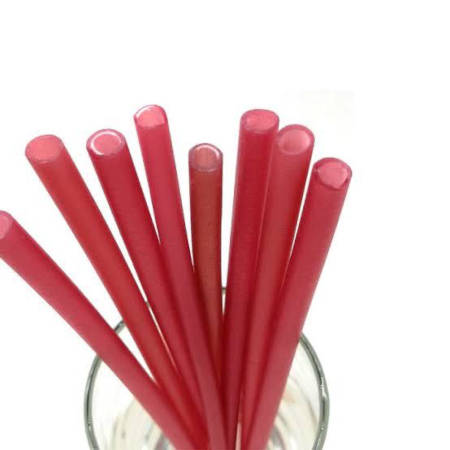
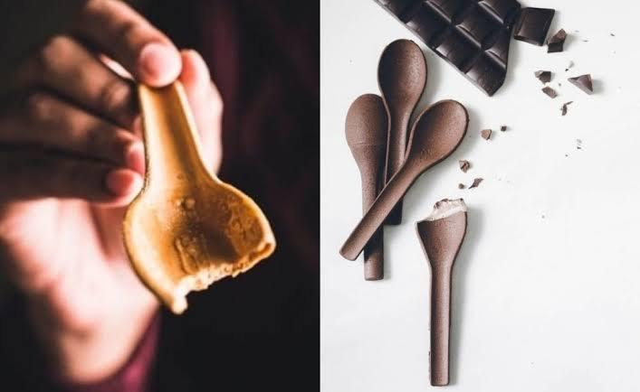

O objetivo de fazer um canudo com colher comestível não é só ser algo que chame a atenção por ser “comestível” diferentemente dos outros canudos. Mas é encontrar mais uma forma de ajudar o meio ambiente e ser um produto sustentável, tendo duas funções em um só produto, que é beber e comer com o canudo.

